Фабрика
цвета
Робот пришёл на примерку! Подбери ему солнечный, морской или ягодный наряд. Узнаем, как одна баночка краски меняет сразу несколько деталей.
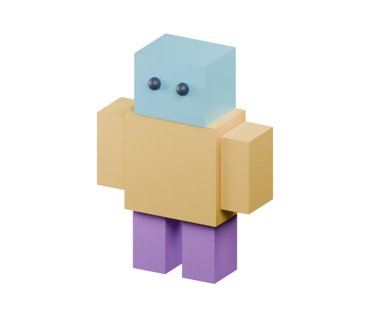
Одна краска — много деталей
Материал — как баночка краски с именем. Одну баночку можно дать нескольким предметам. Если поменять её цвет, все эти предметы перекрасятся вместе. Их форма останется прежней. Мы уже пробовали цвет в первой неделе; теперь научимся управлять общей краской и собирать палитру.
Угадай: тело и рука используют SUN. Что случится с рукой, если перекрасить SUN у тела?
Открой первую баночку
Сегодня не строим новую сложную форму. Достанем знакомого робота и подарим ему цвет.
Пригласи свою модель
Вместе со взрослым выбери File → Open и открой робота из первой недели. Подойдёт и домик, сундук или самолёт! Сразу выбери File → Save As и сохрани colour-lab.blend — отдельную цветную версию. Исходная работа останется на месте.
Покажи мне: новая копия работы
Снимки рабочего окна и виды модели из Blender 5.2. Нажми на картинку, чтобы рассмотреть её крупнее. Твоя модель может выглядеть иначе.
Сохрани цветную версию

В меню File выбери Save As для новой копии colour-lab.blend. Потом используй Save. Для продолжения — File → Open.
Проверь: Файл с цветной моделью сохранён, исходная работа осталась отдельно.
Выбери деталь и создай материал
В Object Mode щёлкни по телу робота. Справа открой Material Properties — значок красного шарика. Нажми New. Если материал уже есть, используй его; взрослый поможет переименовать его в SUN в строке имени материала.
Покажи мне: где New и имя материала
Снимки рабочего окна и виды модели из Blender 5.2. Нажми на картинку, чтобы рассмотреть её крупнее. Твоя модель может выглядеть иначе.
Новая баночка краски
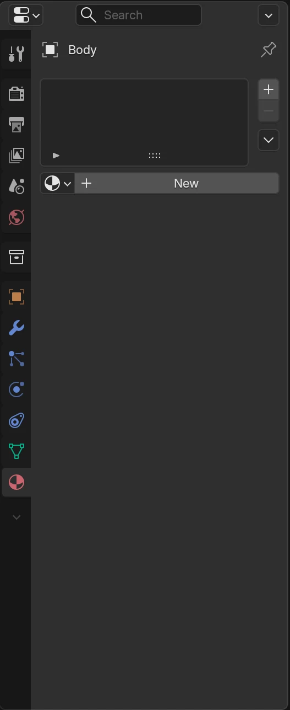
Выбери тело робота в Object Mode. Справа нажми красный шарик Material Properties, затем New.
Проверь: У выбранного предмета появился материал.
Имя и цвет материала
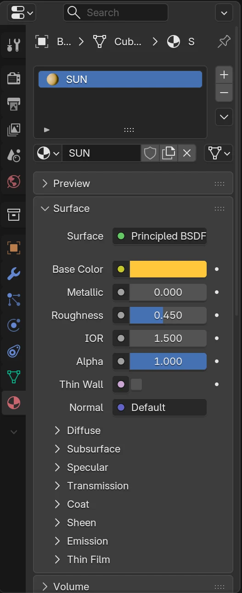
Назови материал SUN. Нажми цветной прямоугольник Base Color и выбери жёлтый. Щёлкни вне окна цвета, чтобы закрыть его.
Проверь: В строке материала написано SUN, а Base Color стал жёлтым.
Выбери солнечный цвет
В разделе Surface нажми цветной прямоугольник Base Color. Выбери цвет мышью и щёлкни вне окна цвета. Затем вверху справа большого окна нажми третий шарик — Material Preview. Подожди несколько секунд: теперь видно краску!
Покажи мне: цвет и показ материалов
Снимки рабочего окна и виды модели из Blender 5.2. Нажми на картинку, чтобы рассмотреть её крупнее. Твоя модель может выглядеть иначе.
Имя и цвет материала
Назови материал SUN. Нажми цветной прямоугольник Base Color и выбери жёлтый. Щёлкни вне окна цвета, чтобы закрыть его.
Проверь: В строке материала написано SUN, а Base Color стал жёлтым.
Включи показ материалов
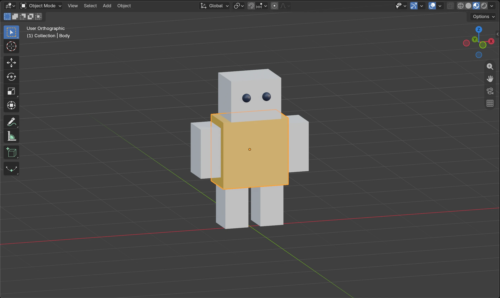
Вверху справа большого окна нажми третий шарик — Material Preview. Подожди, пока Blender подготовит свет.
Проверь: Тело стало жёлтым. Белые части ещё ждут своей краски.


Нет старого файла?
Можно взять стартовый куб как тело. Добавь ещё два куба через знакомое Add → Mesh → Cube: уменьши один через S и подними через G, Z — это голова. Другой уменьши и отведи вбок через G, X — рука. Взрослый может подготовить эти три детали. Картинки про размер и перемещение из недели 1 →
Что у меня получилось
Закрой баночки — сохрани работу
Вместе со взрослым открой File → Save As, выбери свою папку и сохрани новую копию, чтобы оставить исходную модель. Назови файл colour-lab.blend. Нажми Save As в окне сохранения. Можно закончить на сегодня!
Когда вернёшься, открой File → Open и выбери colour-lab.blend. Отметки на сайте сохраняют твои открытия, а файл Blender — саму модель.
Покажи мне: сохранить и продолжить завтра
Снимки рабочего окна и виды модели из Blender 5.2. Нажми на картинку, чтобы рассмотреть её крупнее. Твоя модель может выглядеть иначе.
Сохрани цветную версию
В меню File выбери Save As для новой копии colour-lab.blend. Потом используй Save. Для продолжения — File → Open.
Проверь: Файл с цветной моделью сохранён, исходная работа осталась отдельно.
Поделись краской
Для второй детали не нужна новая баночка. Возьмём ту же самую SUN и проверим маленькое волшебство.
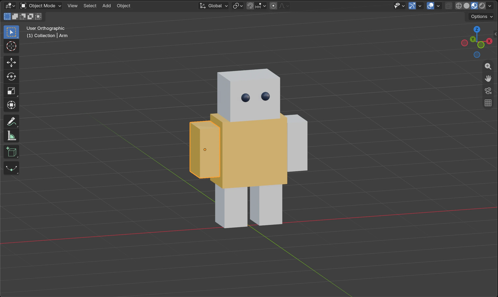
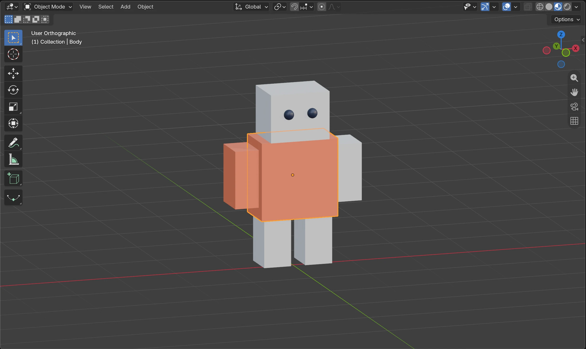
Дай руке готовый SUN
Щёлкни по руке робота. Во вкладке Material Properties открой список материалов: маленький шарик со стрелкой слева от New или имени материала. Выбери SUN. Если материал у руки уже есть, тот же список позволяет заменить его. New не нажимай: нам нужна общая краска.
Покажи мне: готовый материал на второй детали
Снимки рабочего окна и виды модели из Blender 5.2. Нажми на картинку, чтобы рассмотреть её крупнее. Твоя модель может выглядеть иначе.
Возьми готовую краску
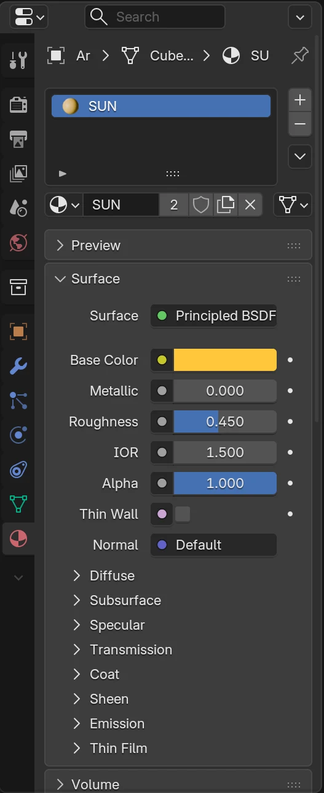
Выбери руку. Вместо New открой список материалов маленьким шариком слева в строке материала и выбери SUN. Число рядом с именем показывает, что краска используется несколькими предметами.
Проверь: У руки и тела одно имя материала — SUN.
Две части — одна краска
Сравни руку и тело: обе детали используют SUN. Вторая рука пока белая.
Проверь: Жёлтыми стали две отдельные детали.
Предскажи, потом перекрась
Выбери тело. Сначала скажи: «Если SUN станет оранжевой, рука…» Теперь измени Base Color у SUN. Посмотри на обе детали. Они остаются отдельными предметами, но используют общую баночку!
Покажи мне: одна правка меняет две детали
Снимки рабочего окна и виды модели из Blender 5.2. Нажми на картинку, чтобы рассмотреть её крупнее. Твоя модель может выглядеть иначе.
Возьми готовую краску
Выбери руку. Вместо New открой список материалов маленьким шариком слева в строке материала и выбери SUN. Число рядом с именем показывает, что краска используется несколькими предметами.
Проверь: У руки и тела одно имя материала — SUN.
Перекрась сразу обе части
Выбери тело и измени Base Color у SUN на оранжевый. Смотри на руку: она меняется вместе с телом. Затем Ctrl+Z вернёт жёлтый.
Проверь: Один материал изменил цвет двух предметов; их форма осталась прежней.
Верни любимый цвет
Если хочешь вернуть жёлтый, наведи мышь на большое окно и нажми Ctrl+Z один раз. Или выбери новый цвет для SUN. Покажи, что форма руки и тела не изменилась.
Покажи мне: что изменилось, а что осталось
Снимки рабочего окна и виды модели из Blender 5.2. Нажми на картинку, чтобы рассмотреть её крупнее. Твоя модель может выглядеть иначе.
Две части — одна краска
Сравни руку и тело: обе детали используют SUN. Вторая рука пока белая.
Проверь: Жёлтыми стали две отдельные детали.
Перекрась сразу обе части
Выбери тело и измени Base Color у SUN на оранжевый. Смотри на руку: она меняется вместе с телом. Затем Ctrl+Z вернёт жёлтый.
Проверь: Один материал изменил цвет двух предметов; их форма осталась прежней.


Проверь себя: почему рука перекрасилась, хотя ты выбрал тело?
Что у меня получилось
Закрой баночки — сохрани работу
Перед перерывом выбери File → Save. Если файл ещё не назван, выбери File → Save As и сохрани colour-lab.blend в своей папке. Можно закончить на сегодня!
Когда вернёшься, открой File → Open и выбери colour-lab.blend. Отметки на сайте сохраняют твои открытия, а файл Blender — саму модель.
Покажи мне: сохранить и продолжить завтра
Снимки рабочего окна и виды модели из Blender 5.2. Нажми на картинку, чтобы рассмотреть её крупнее. Твоя модель может выглядеть иначе.
Сохрани цветную версию
В меню File выбери Save As для новой копии colour-lab.blend. Потом используй Save. Для продолжения — File → Open.
Проверь: Файл с цветной моделью сохранён, исходная работа осталась отдельно.
Собери свою палитру
Палитра — это маленькая команда цветов. Выбери два или три для больших деталей. Глаза могут остаться тёмными.
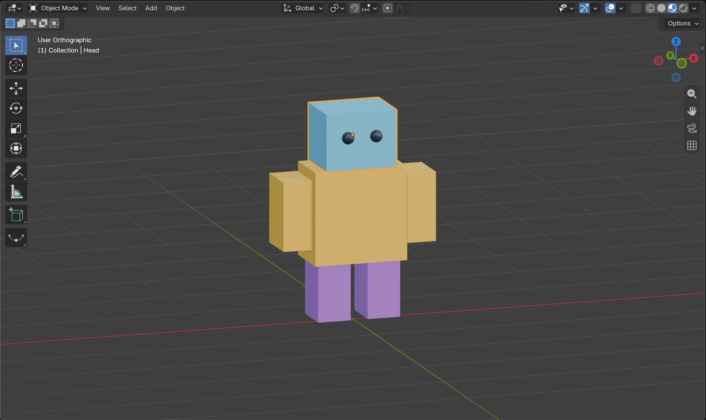
Солнце, море и ягоды
Это пример, а не правило. Твоя команда цветов может быть другой.
Новая краска для головы
Выбери голову. Если материала ещё нет, нажми New, назови материал SKY и выбери свой Base Color. На снимке он голубой. Если голова уже использует SUN, не меняй её Base Color сразу: сначала сделай отдельную копию по подсказке ниже.
Покажи мне: свой материал у головы
Снимки рабочего окна и виды модели из Blender 5.2. Нажми на картинку, чтобы рассмотреть её крупнее. Твоя модель может выглядеть иначе.
Ещё одна баночка: SKY
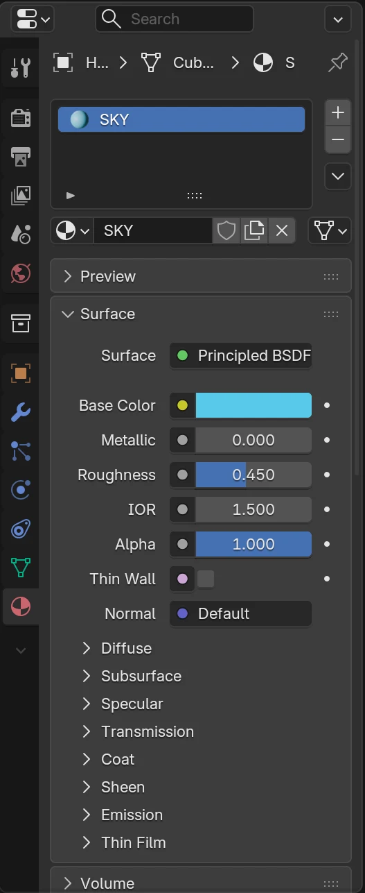
Выбери голову, создай New, назови SKY и выбери голубой Base Color. Если материал уже есть, попроси взрослого помочь сделать отдельную копию.
Проверь: У головы свой материал SKY.
Раздай баночки деталям
Выбери вторую руку и дай ей SUN через список материалов. Для ног можешь использовать SKY — получится два главных цвета. Или создай для одной ноги New → BERRY, а для второй выбери готовый BERRY из списка.
Покажи мне: готовые краски и палитра
Снимки рабочего окна и виды модели из Blender 5.2. Нажми на картинку, чтобы рассмотреть её крупнее. Твоя модель может выглядеть иначе.
Возьми готовую краску
Выбери руку. Вместо New открой список материалов маленьким шариком слева в строке материала и выбери SUN. Число рядом с именем показывает, что краска используется несколькими предметами.
Проверь: У руки и тела одно имя материала — SUN.
Ещё одна баночка: SKY
Выбери голову, создай New, назови SKY и выбери голубой Base Color. Если материал уже есть, попроси взрослого помочь сделать отдельную копию.
Проверь: У головы свой материал SKY.
Палитра из трёх цветов
Голова — SKY, тело и руки — SUN, ноги — BERRY. Для первой ноги создай BERRY через New, для второй выбери готовый BERRY из списка.
Проверь: Большие части используют только три материала. Глаза можно оставить тёмными.
Поиграй в дизайнера
Придумай название палитре: «Лимонный капитан» или «Черничный космос»? Выбери любую деталь и покажи, какая у неё баночка. Перед изменением цвета угадай, какие ещё детали перекрасятся.
Покажи мне: модель с командой цветов
Снимки рабочего окна и виды модели из Blender 5.2. Нажми на картинку, чтобы рассмотреть её крупнее. Твоя модель может выглядеть иначе.


Со взрослым: хочу перекрасить только одну деталь
Выбери деталь с общим материалом. Справа от имени материала есть число пользователей (например, 2 или 3). Нажми число: Blender сделает отдельную копию. Назови её PEACH и только потом измени Base Color. Остальные детали сохранят старую краску. Это копия материала, а не копия всего предмета. Если числа нет, материал уже используется отдельно.
Покажи мне: общая краска и отдельная копия
Снимки рабочего окна и виды модели из Blender 5.2. Нажми на картинку, чтобы рассмотреть её крупнее. Твоя модель может выглядеть иначе.
Число пользователей: сделай отдельную копию
На снимке SUN используют два предмета. Нажми число 2 справа от имени SUN, чтобы создать отдельную копию для выбранной руки. Затем переименуй копию и выбирай её цвет.
Проверь: Копия имеет своё имя и больше не перекрашивает тело.
Отдельная копия краски
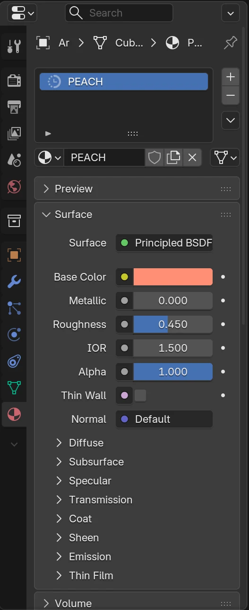
Это необязательный опыт со взрослым. На руке с SUN нажми число пользователей справа от имени материала, затем назови копию PEACH и измени её Base Color.
Проверь: У руки отдельная краска PEACH; SUN у тела остаётся прежним.
Одна рука другого цвета
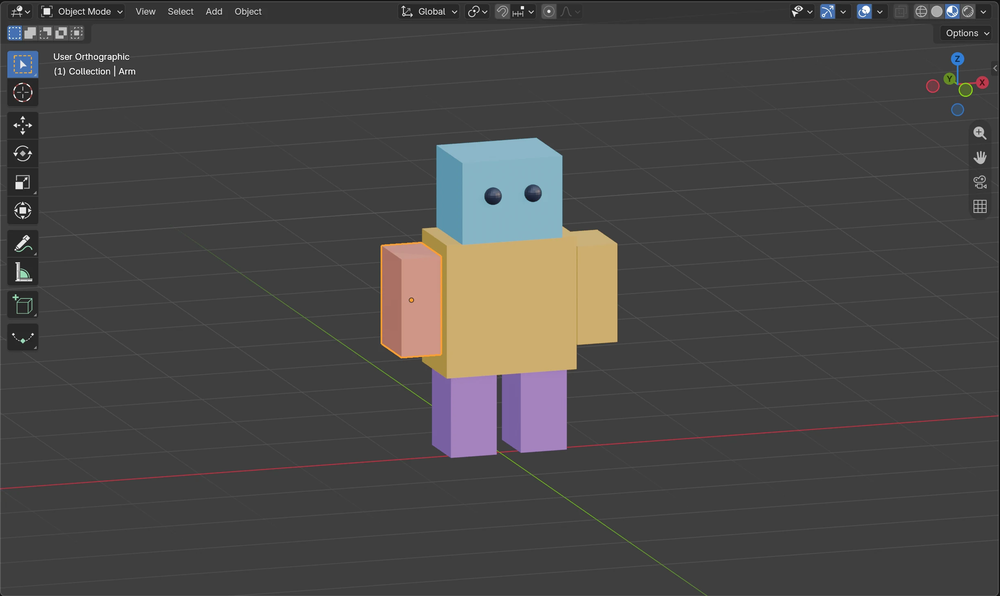
После копирования перекрашивается только выбранная рука. В основной палитре можно снова выбрать SUN, чтобы вернуться к трём цветам.
Проверь: Тело не перекрасилось вместе с рукой.


Для основной палитры можешь снова выбрать SUN в списке материалов.
Что у меня получилось
Закрой баночки — сохрани работу
Перед перерывом выбери File → Save. Если файл ещё не назван, выбери File → Save As и сохрани colour-lab.blend в своей папке. Можно закончить на сегодня!
Когда вернёшься, открой File → Open и выбери colour-lab.blend. Отметки на сайте сохраняют твои открытия, а файл Blender — саму модель.
Покажи мне: сохранить и продолжить завтра
Снимки рабочего окна и виды модели из Blender 5.2. Нажми на картинку, чтобы рассмотреть её крупнее. Твоя модель может выглядеть иначе.
Сохрани цветную версию
В меню File выбери Save As для новой копии colour-lab.blend. Потом используй Save. Для продолжения — File → Open.
Проверь: Файл с цветной моделью сохранён, исходная работа осталась отдельно.
Робот выходит на подиум
Поверни вид знакомым способом. Посмотри, как цвета дружат спереди и сбоку. Точная копия картинки не нужна.
Показ мод открыт!
У одной модели несколько материалов, а один материал может быть у нескольких деталей.
Найди общую баночку
Щёлкни по телу, затем по руке. Прочитай имя материала в правой панели. Если обе используют SUN, выбери новый цвет и посмотри на них вместе. Верни любимый цвет через Ctrl+Z, если хочется.
Покажи мне: имя материала и общий цвет
Снимки рабочего окна и виды модели из Blender 5.2. Нажми на картинку, чтобы рассмотреть её крупнее. Твоя модель может выглядеть иначе.
Возьми готовую краску
Выбери руку. Вместо New открой список материалов маленьким шариком слева в строке материала и выбери SUN. Число рядом с именем показывает, что краска используется несколькими предметами.
Проверь: У руки и тела одно имя материала — SUN.
Перекрась сразу обе части
Выбери тело и измени Base Color у SUN на оранжевый. Смотри на руку: она меняется вместе с телом. Затем Ctrl+Z вернёт жёлтый.
Проверь: Один материал изменил цвет двух предметов; их форма осталась прежней.
Расскажи и сохрани
Покажи свою палитру другу или взрослому. Закончи фразу: «Если две детали используют один материал, то…» Сохрани colour-lab.blend через File → Save.
Покажи мне: цветная версия готова
Снимки рабочего окна и виды модели из Blender 5.2. Нажми на картинку, чтобы рассмотреть её крупнее. Твоя модель может выглядеть иначе.
Сохрани цветную версию
В меню File выбери Save As для новой копии colour-lab.blend. Потом используй Save. Для продолжения — File → Open.
Проверь: Файл с цветной моделью сохранён, исходная работа осталась отдельно.
Палитра из трёх цветов
Голова — SKY, тело и руки — SUN, ноги — BERRY. Для первой ноги создай BERRY через New, для второй выбери готовый BERRY из списка.
Проверь: Большие части используют только три материала. Глаза можно оставить тёмными.
Бонус со взрослым: блестит или матовое?
Этот опыт можно пропустить. Выбери голову и в Surface найди Roughness — шероховатость. Попробуй 0.08, затем 0.85. Маленькое число делает блики резче, большое — мягче. Поверни вид в Material Preview, чтобы заметить свет. Metallic оставь как есть. У всех деталей с этим материалом поверхность изменится вместе.
Покажи мне: где Roughness и как меняется блик
Снимки рабочего окна и виды модели из Blender 5.2. Нажми на картинку, чтобы рассмотреть её крупнее. Твоя модель может выглядеть иначе.
Секретная ручка Roughness
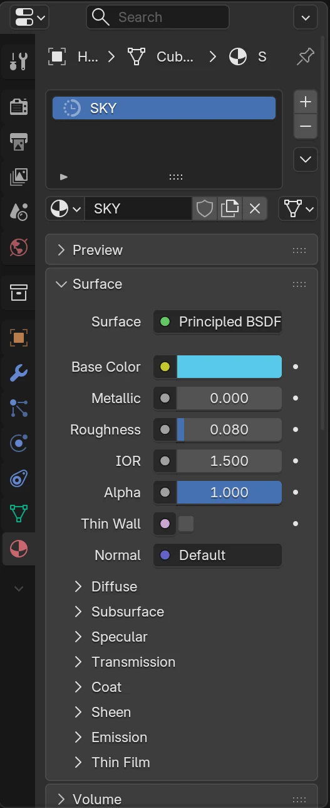
Необязательный опыт: выбери голову и найди Roughness в Surface. Маленькое число даёт более резкие блики, большое — более мягкие. Metallic оставь без изменений.
Проверь: Ты нашёл параметр поверхности, а не формы.
Более блестящая голова
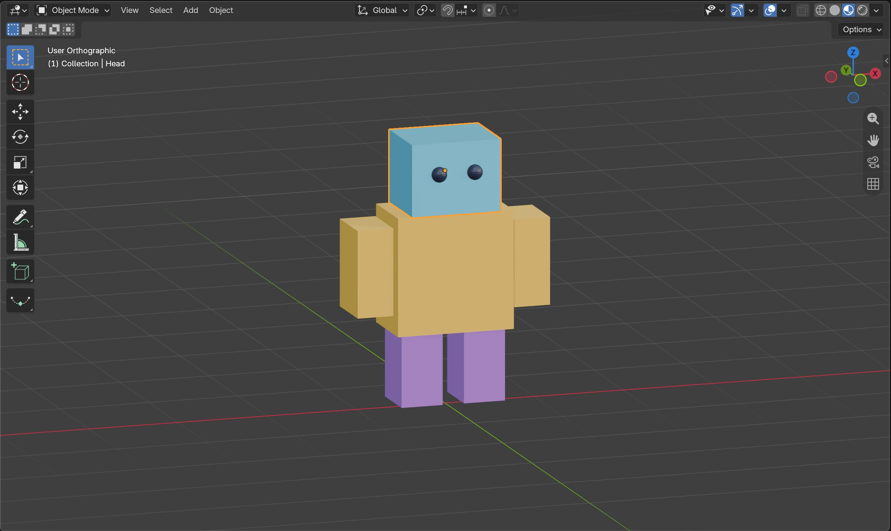
У SKY поставь Roughness около 0.08. Поверни вид, чтобы заметить отражение света.
Проверь: На голове виден более резкий блик; цвет тот же.
Более матовая голова
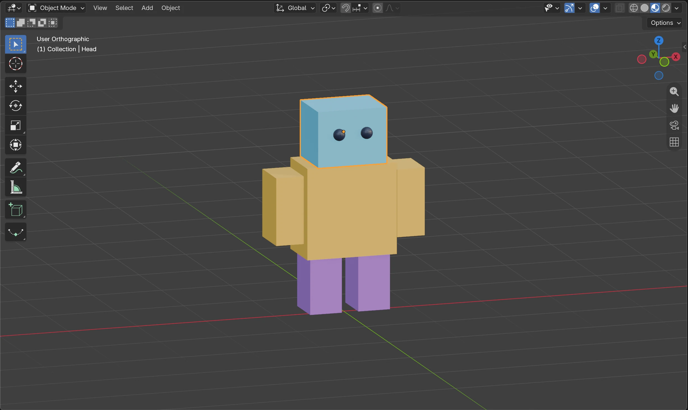
Поставь Roughness около 0.85 и сравни с предыдущим кадром. На плоских деталях эффект может быть слабым — поверни вид.
Проверь: Блик стал мягче. Голова не поменяла форму.


Цвет и форма остались прежними. Выбери понравившийся вариант и сохрани ещё раз.
Что у меня получилось
Закрой баночки — сохрани работу
Перед перерывом выбери File → Save. Если файл ещё не назван, выбери File → Save As и сохрани colour-lab.blend в своей папке. Можно закончить на сегодня!
Когда вернёшься, открой File → Open и выбери colour-lab.blend. Отметки на сайте сохраняют твои открытия, а файл Blender — саму модель.
Покажи мне: сохранить и продолжить завтра
Снимки рабочего окна и виды модели из Blender 5.2. Нажми на картинку, чтобы рассмотреть её крупнее. Твоя модель может выглядеть иначе.
Сохрани цветную версию
В меню File выбери Save As для новой копии colour-lab.blend. Потом используй Save. Для продолжения — File → Open.
Проверь: Файл с цветной моделью сохранён, исходная работа осталась отдельно.
Фабрика цвета работает!
Ты управляешь материалами как 3D-художник: создаёшь краску, назначаешь её деталям и собираешь палитру. В следующей неделе придумаем наклейку для героя.
На карту приключений →Для взрослых: подготовка и помощь
Главное понятие недели — материал как повторно используемые данные: несколько отдельных объектов могут ссылаться на один материал. Ребёнок предсказывает, затем наблюдает совместное изменение цвета. Это развитие первого знакомства с цветом из недели 1, а не новый проект на скорость. Первую миссию проведите за 10–15 минут, следующие — по 15–20 минут с остановками.
Перед началом
- Откройте прежнюю модель, сразу сохраните отдельную копию colour-lab.blend. Для опыта нужны хотя бы два отдельных mesh-объекта. Если модель объединена в один предмет или имеет несколько слотов материалов, подготовьте три простых куба: назначение материала отдельным граням в этот урок не входит.
- Работайте в Object Mode, Layout, Material Preview. В Material Properties кнопка New создаёт материал. Список с иконкой материала слева от имени позволяет выбрать существующий. При необходимости расширьте правую колонку, потянув её левый край.
- Если деталь уже имеет общий материал, кнопка с числом пользователей справа от имени делает single-user copy. Только после этого меняйте цвет независимо. Не путайте копирование материала и сохранение копии .blend. В 6–7 лет взрослый может открывать панели и вводить имена; ребёнок выбирает цвета и предсказывает изменения.
- Снимки сделаны в отдельной сцене Blender 5.2.2: справа видны настоящие панели, в большом окне — результат в Material Preview. Ваши формы и имена могут отличаться. На старых моделях имена материалов могут быть другими; используйте их или переименуйте. Тёмные глаза не считаются главным цветом палитры.
- Roughness и независимая копия — необязательные опыты. Не вводим текстуры, UV, узлы, слоты граней или рендер. Плоские поверхности показывают изменение блика слабее круглых; вращайте вид и сравнивайте.
Что считать успехом
Ребёнок назначил 2–3 главных материала, использовал один на нескольких деталях, объяснил совместное перекрашивание и сохранил модель. Форма при смене материала не меняется.